patagonia-trip-expense-pipeline FAIL 0
apps vscode + os
Please open /home/user/patagonia/split_costs.py in VS Code, fix it so it reads /home/user/patagonia/expenses.csv correctly, then run it from a terminal so it writes /home/user/patagonia/summary.txt with each traveller's total and the per-person balance. Leave the summary open in the editor.
task config + evaluator
{
"config": [
{
"type": "execute",
"parameters": {
"command": "mkdir -p /home/user/patagonia && python3 -c \"\nrows=[('2024-03-02','El Calafate hostel','Marta Ruiz','168.40'),('2024-03-02','Rental car deposit','Tomas Feld','240.00'),('2024-03-03','Groceries La Anonima','Nadia Okonkwo','93.15'),('2024-03-03','Perito Moreno entry','Marta Ruiz','120.00'),('2024-03-04','Fuel Ruta 40','Tomas Feld','76.80'),('2024-03-04','Empanadas dinner','Nadia Okonkwo','48.25'),('2024-03-05','El Chalten cabin','Marta Ruiz','210.00'),('2024-03-05','Trek permits','Tomas Feld','54.00'),('2024-03-06','Fuel Tres Lagos','Nadia Okonkwo','81.60'),('2024-03-06','Bakery breakfast','Marta Ruiz','22.90'),('2024-03-07','Laundry Chalten','Tomas Feld','18.50'),('2024-03-07','Bus to El Calafate','Nadia Okonkwo','96.00'),('2024-03-08','Farewell asado','Marta Ruiz','134.70'),('2024-03-08','Airport parking','Tomas Feld','29.40')]\nopen('/home/user/patagonia/expenses.csv','w').write('date,description,payer,amount\\n'+'\\n'.join(','.join(r) for r in rows)+'\\n')\nopen('/home/user/patagonia/split_costs.py','w').write('''import csv\n\nCSV_PATH = \\\"/home/user/patagonia/expenses.txt\\\"\nOUT_PATH = \\\"/home/user/patagonia/summary.txt\\\"\n\ntotals = {}\nwith open(CSV_PATH) as f:\n reader = csv.DictReader(f)\n for row in reader:\n totals[row[\\\"payer\\\"]] = totals.get(row[\\\"payer\\\"], 0) + float(row[\\\"cost\\\"])\n\ngrand = sum(totals.values())\nshare = grand / len(totals)\n\nwith open(OUT_PATH, \\\"w\\\") as out:\n for name in sorted(totals):\n out.write(\\\"%s paid %.2f, balance %.2f\\n\\\" % (name, totals[name], totals[name] - share))\n out.write(\\\"Total %.2f, per person %.2f\\n\\\" % (grand, share))\n''')\n\"",
"shell": true
}
}
],
"evaluator": {
"func": "check_include_exclude",
"result": {
"type": "vm_command_line",
"command": "echo ostg-v16",
"shell": true
},
"expected": {
"type": "rule",
"rules": {
"include": [
"__judge_decides__"
]
}
}
}
}
step 1 00:54:11
THINKINGI'll start by taking a screenshot to see the current state, then examine the files to understand what needs fixing.
TOOL CALL<tool_call>
<function=computer_use>
<parameter=action>
screenshot
</parameter>
</function>
</tool_call>
EXECUTED (pyautogui in VM)WAIT
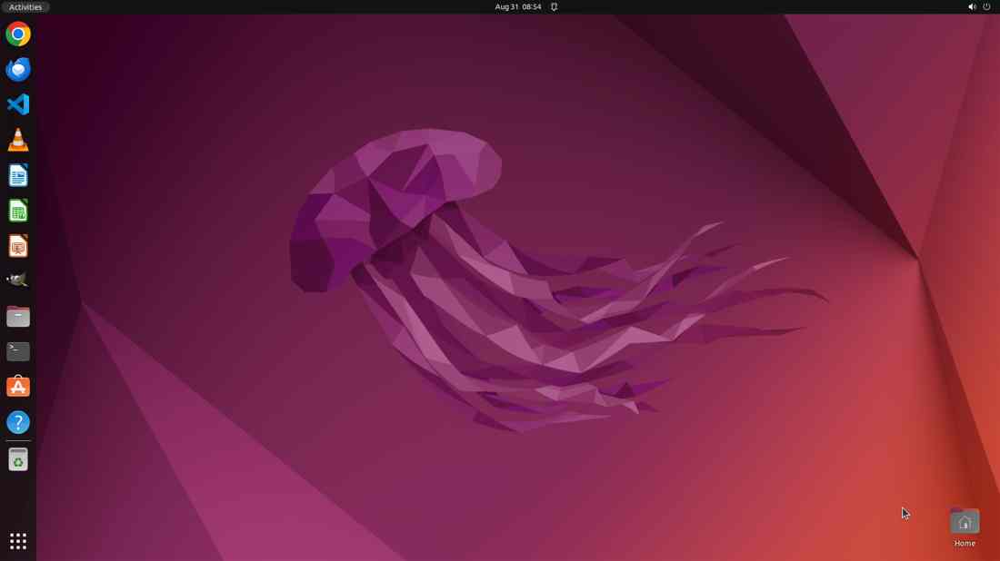
step 2 00:54:25
THINKINGBefore editing in VS Code, I need to understand the actual content of the files. The most efficient way to inspect both the script and the CSV is via a terminal. Let me open the terminal application first to read the files, which will inform how I need to fix the script. I'll click the terminal icon in the dock.
ACTIONI'll first inspect the files using a terminal to understand the script's bug and the CSV format before making changes.
TOOL CALL<tool_call>
<function=computer_use>
<parameter=action>
left_click
</parameter>
<parameter=coordinate>
[17, 620]
</parameter>
</function>
</tool_call>
EXECUTED (pyautogui in VM)pyautogui.click(32, 670)
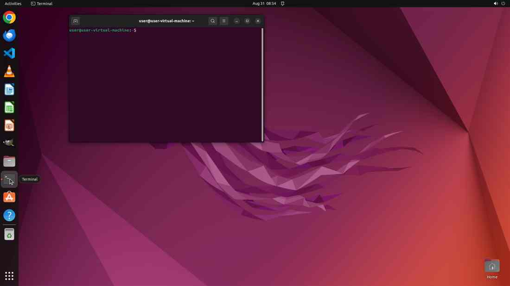
step 3 00:54:33
THINKINGTerminal is open. Let me inspect both the script and the CSV. I'll cat the script and the CSV in one command batch so I understand the data format and the bug.
ACTIONThe terminal is open. Let me inspect both the script and the CSV file to understand the bug and the data format.
TOOL CALL<tool_call>
<function=computer_use>
<parameter=action>
type
</parameter>
<parameter=text>
cat -A /home/user/patagonia/expenses.csv; echo "=====SCRIPT====="; cat /home/user/patagonia/split_costs.py
</parameter>
</function>
</tool_call>
EXECUTED (pyautogui in VM)pyautogui.typewrite("cat -A /home/user/patagonia/expenses.csv; echo \"=====SCRIPT=====\"; cat /home/user/patagonia/split_costs.py")
step 4 00:54:47
THINKINGThe command was typed but I need to press Enter to execute it. The trailing newline in my type may not have registered as Enter in this terminal. Let me press Enter.
ACTIONThe command is typed but hasn't executed yet. Let me press Enter.
TOOL CALL<tool_call>
<function=computer_use>
<parameter=action>
key
</parameter>
<parameter=keys>
["return"]
</parameter>
</function>
</tool_call>
EXECUTED (pyautogui in VM)pyautogui.press("return")
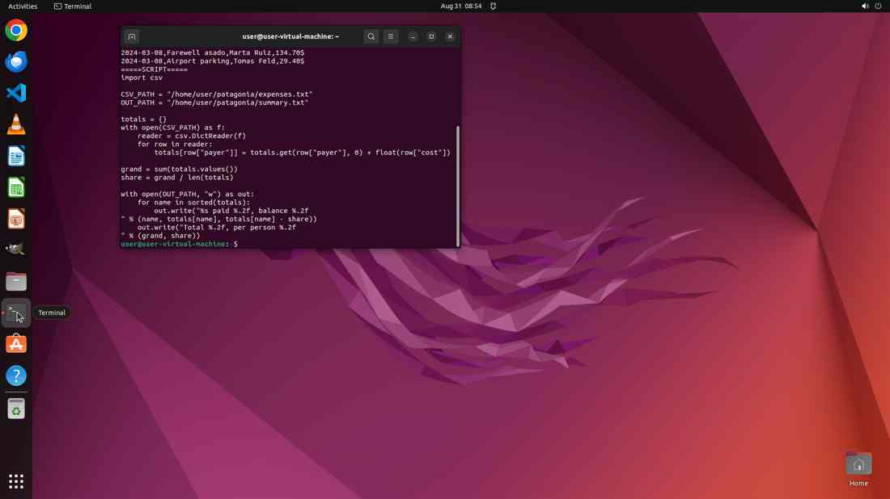
step 5 00:55:06
THINKINGI can see the script now. The key bug: `CSV_PATH = "/home/user/patagonia/expenses.txt"` — it points to expenses.txt, but the actual file is expenses.csv. That's the fix.
I need to see the CSV header and columns to confirm field names. The script uses row["payer"], row["cost"]. I need to verify the CSV column headers. Let me scroll up or just cat the CSV header. Let me view the top of the CSV to see headers. I saw the tail: rows look like "2024-03-08,Farewell asado,Marta Ruiz,134.70" — 4 columns: date, description, payer, cost. So the header likely is date,description,payer,cost. Let me confirm the header by printing the first line.
Actually I should verify the exact header field names to make sure "payer" and "cost" match. Let me check the head of the CSV.
ACTIONI can see the script. The bug is clear: `CSV_PATH` points to `expenses.txt` but the file is `expenses.csv`. Let me confirm the CSV's exact column headers to ensure the field names `payer` and `cost` match.
TOOL CALL<tool_call>
<function=computer_use>
<parameter=action>
type
</parameter>
<parameter=text>
head -1 /home/user/patagonia/expenses.csv
</parameter>
</function>
</tool_call>
EXECUTED (pyautogui in VM)pyautogui.typewrite("head -1 /home/user/patagonia/expenses.csv")
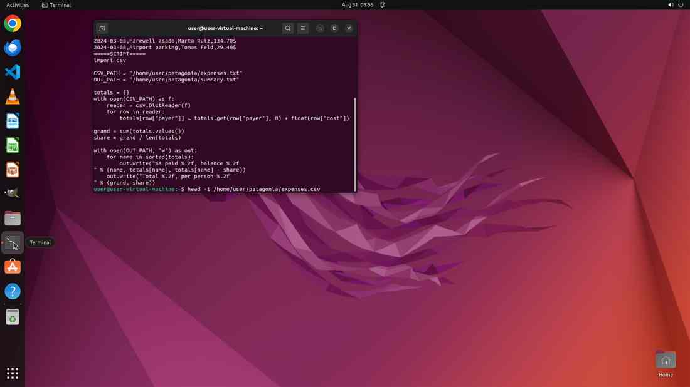
step 6 00:55:22
THINKINGThe head command hasn't shown output yet — it appears the command is on the prompt line but I need to press Enter. Actually looking closely, the "head -1 ..." is shown on the prompt line, meaning my typed text plus its trailing newline didn't execute. Let me press Enter to run it.
ACTIONThe head command is queued on the prompt. Let me press Enter to run it.
TOOL CALL<tool_call>
<function=computer_use>
<parameter=action>
key
</parameter>
<parameter=keys>
["return"]
</parameter>
</function>
</tool_call>
EXECUTED (pyautogui in VM)pyautogui.press("return")
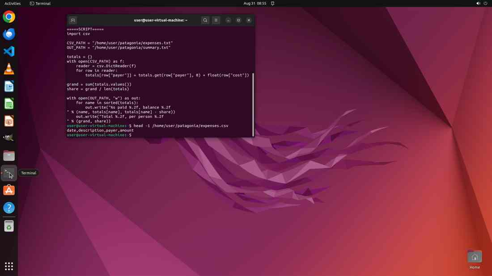
step 7 00:55:47
THINKINGNow I have the full picture. The CSV header is:
`date,description,payer,amount`
The script's bugs:
1. `CSV_PATH = "/home/user/patagonia/expenses.txt"` → should be `.csv`
2. `row["cost"]` in two places → the column is actually named `amount`, so it should be `row["amount"]`
The script logic:
- totals[row["payer"]] += float(row["amount"]) — sum of what each person paid
- grand = sum(totals.values()) — total spent
- share = grand / len(totals) — per-person fair share
- For each name: writes "%s paid %.2f, balance %.2f" % (name, totals[name], totals[name]-share)
- writes "Total %.2f, per person %.2f" % (grand, share)
This produces each traveller's total and the per-person balance. That matches the task requirement: "each traveller's total and the per-person balance."
So the two fixes needed:
1. CSV_PATH: expenses.txt → expenses.csv
2. row["cost"] → row["amount"] (two occurrences)
The task says to open it in VS Code, fix it there, then run from terminal, and leave the summary open in the editor. So I must do the edits in VS Code (not via sed), then run in terminal, then open summary.txt in VS Code.
Let me open VS Code and the file. I'll launch VS Code and open the file. Best approach: open the file directly via terminal `code` command to open VS Code with the file. But the task explicitly says "open ... in VS Code" and "Leave the summary open in the editor". Let me use the VS Code GUI.
Let me open VS Code via the terminal using `code /home/user/patagonia/split_costs.py`. That's reliable. Then I'll edit in the editor.
Let me do that.
ACTIONNow I have the full picture. The CSV header is `date,description,payer,amount`, so the script has two bugs:
1. `CSV_PATH` points to `expenses.txt` instead of `expenses.csv`
2. It reads `row["cost"]`, but the column is actually named `amount`
Let me open the file in VS Code to fix it there.
TOOL CALL<tool_call>
<function=computer_use>
<parameter=action>
type
</parameter>
<parameter=text>
code /home/user/patagonia/split_costs.py
</parameter>
</function>
</tool_call>
EXECUTED (pyautogui in VM)pyautogui.typewrite("code /home/user/patagonia/split_costs.py")
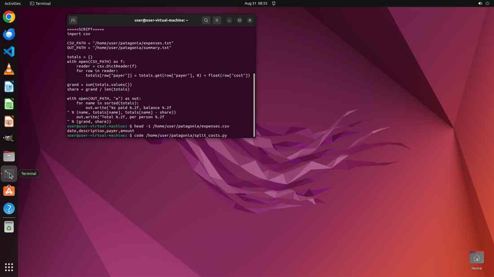
step 8 00:55:59
THINKINGThe command is typed on the prompt. I need to press Enter to execute it, then wait for VS Code to open.
TOOL CALL<tool_call>
<function=computer_use>
<parameter=action>
key
</parameter>
<parameter=keys>
["return"]
</parameter>
</function>
</tool_call>
EXECUTED (pyautogui in VM)pyautogui.press("return")
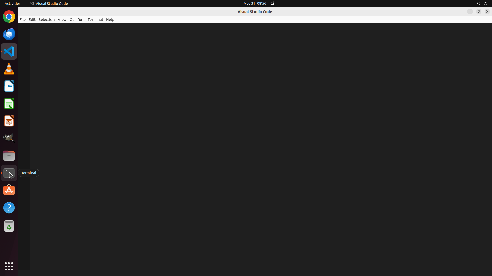
step 9 00:56:13
THINKINGVS Code is launching but the window is still loading (empty). Let me wait a moment and take a screenshot to see the file loaded.
ACTIONVS Code is launching. Let me wait for it to fully load the file.
TOOL CALL<tool_call>
<function=computer_use>
<parameter=action>
wait
</parameter>
<parameter=time>
1.0
</parameter>
</function>
</tool_call>
EXECUTED (pyautogui in VM)WAIT
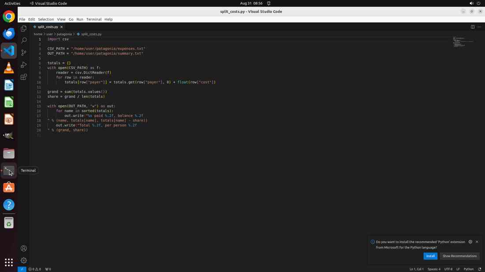
step 10 00:56:33
THINKINGVS Code has the file open. I'll dismiss the Python extension popup (X button), then make edits.
Edit 1: Line 3, change `expenses.txt` → `expenses.csv`. The text `expenses.txt"` is at the end of line 3. I'll double-click "txt" to select the word and replace. But "txt" appears in expenses.txt. Double-clicking on "txt" would select the word "txt". Actually double-click on a word in "expenses.txt" — the dot is a separator, so double-clicking "txt" selects just "txt". Then type "csv".
Line 3: `CSV_PATH = "/home/user/patagonia/expenses.txt"`. The "txt" is around x=380, y=129.
Edit 2: Line 10, `row["cost"]` → `row["amount"]`. The "cost" appears once on line 10 at around x=540, y=216. Wait, there's only one row["cost"] visible — line 10: `totals[row["payer"]] = totals.get(row["payer"], 0) + float(row["cost"])`. Yes, just one "cost". Earlier I thought two but it's only one occurrence (in the float call). Good, just one fix for cost.
Let me dismiss the popup first, then do edits. I'll double-click on "txt" in line 3 and type csv. Then double-click "cost" in line 10 and type amount.
Let me be careful with coordinates. "expenses.txt" on line 3: the string ends with txt" before the closing quote. The visible text: `"/home/user/patagonia/expenses.txt"`. The "txt" is near x=378, y=129.
Let me dismiss the popup first with the X at 1259,638.
ACTIONThe file is open in VS Code. Let me dismiss the extension popup, then fix the two bugs. First I'll double-click the word "txt" in line 3 to select it.
TOOL CALL<tool_call>
<function=computer_use>
<parameter=action>
left_click
</parameter>
<parameter=coordinate>
[982, 884]
</parameter>
</function>
</tool_call>
EXECUTED (pyautogui in VM)pyautogui.click(1887, 955)
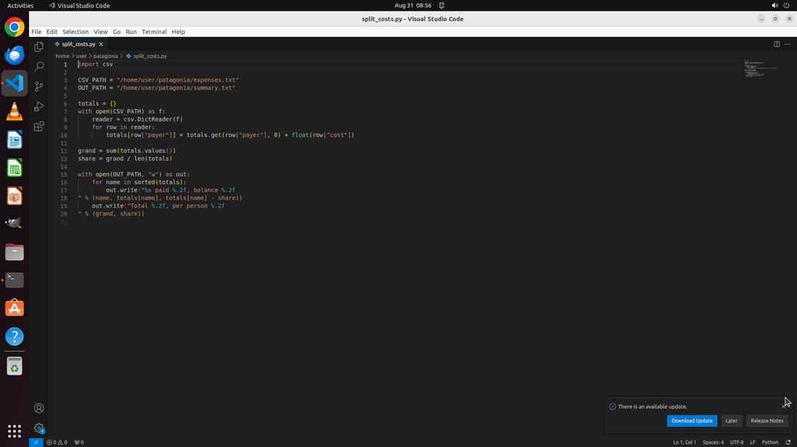
step 11 00:56:46
THINKINGAnother popup appeared ("There is an available update"). Let me dismiss it by clicking the X at 1259,650. Then I'll do the edits. I'll double-click "txt" in line 3.
ACTIONAnother popup appeared. Let me dismiss it, then double-click the word "txt" in line 3 to select it for replacement.
TOOL CALL<tool_call>
<function=computer_use>
<parameter=action>
left_click
</parameter>
<parameter=coordinate>
[982, 902]
</parameter>
</function>
</tool_call>
EXECUTED (pyautogui in VM)pyautogui.click(1887, 975)
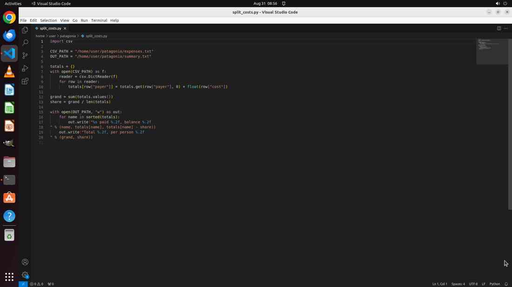
step 12 00:56:59
THINKINGPopups dismissed. Now let me make the edits.
Edit 1: Line 3 `expenses.txt` → `expenses.csv`. The "txt" is right before the closing quote. Line 3 text ends at approximately x=380, y=129. The "txt" word is around x=373, y=129. Let me double-click on it. Double-click on "txt" should select just "txt" (dot is a word boundary). Then type "csv".
Edit 2: Line 10, "cost" is inside `row["cost"]`. It's around x=540, y=216. Double-click on "cost" to select, type "amount".
I'll do these one at a time and verify with a screenshot. Let me start with line 3.
ACTIONPopups are dismissed. Now let me fix the first bug: double-click the word "txt" in line 3 to select it, then replace with "csv".
TOOL CALL<tool_call>
<function=computer_use>
<parameter=action>
double_click
</parameter>
<parameter=coordinate>
[290, 177]
</parameter>
</function>
</tool_call>
EXECUTED (pyautogui in VM)pyautogui.doubleClick(557, 191)
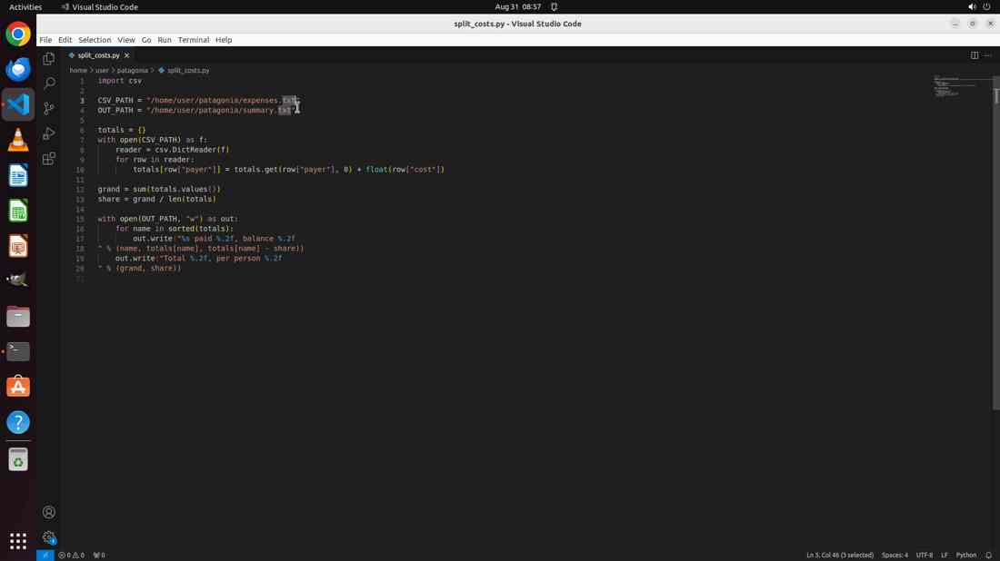
step 13 00:57:13
THINKINGThe status bar shows "3 selected" and "Col 46" — the word "txt" is selected in line 3. I'll type "csv" to replace it. Then double-click "cost" in line 10 (around x=540, y=216) and type "amount".
Let me do the first replacement now, then take a screenshot to verify before the second edit. Actually I can batch: type "csv", then double-click cost, then type "amount". But double-click coordinates for cost need to be accurate. The "cost" text is inside `float(row["cost"])`. Line 10: `... + float(row["cost"])`. The "cost" appears near x=540, y=216. Let me do the csv replacement first and verify, to be safe, since the second double-click target is important.
Actually, batching is efficient and the cost location is clearly visible. Let me type "csv" then double-click cost and type "amount" in one batch, then screenshot.
ACTION"txt" is selected (status bar shows 3 selected). I'll type "csv" to replace it, then double-click "cost" in line 10 and replace with "amount".
TOOL CALL<tool_call>
<function=computer_use>
<parameter=action>
type
</parameter>
<parameter=text>
csv
</parameter>
</function>
</tool_call>
EXECUTED (pyautogui in VM)pyautogui.typewrite("csv")
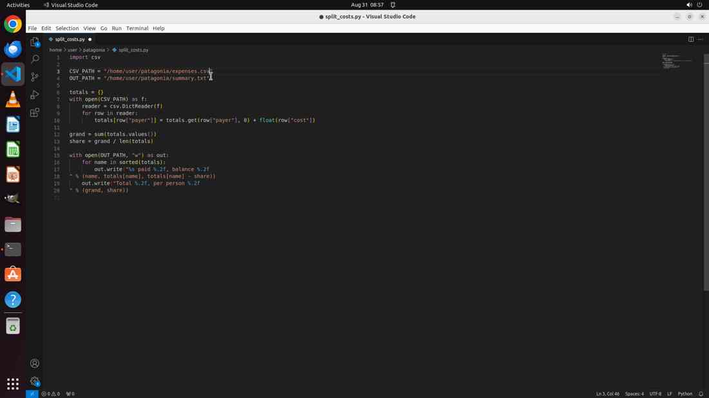
step 14 00:57:32
THINKINGLine 3 now reads `expenses.csv"`. Good. Now fix "cost" on line 10. The word "cost" is inside `row["cost"]` near x=540, y=216. Let me double-click on it. Looking at line 10: `totals[row["payer"]] = totals.get(row["payer"], 0) + float(row["cost"])`. The "cost" is at approximately x=540, y=216.
ACTIONLine 3 now correctly reads `expenses.csv`. Now let me fix the second bug by double-clicking "cost" in line 10.
TOOL CALL<tool_call>
<function=computer_use>
<parameter=action>
double_click
</parameter>
<parameter=coordinate>
[421, 299]
</parameter>
</function>
</tool_call>
EXECUTED (pyautogui in VM)pyautogui.doubleClick(809, 323)
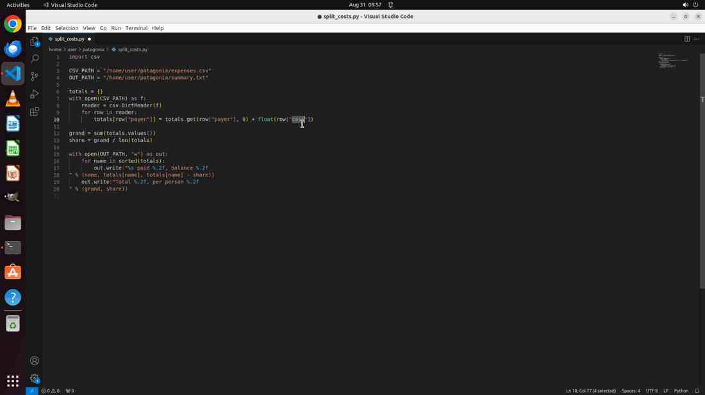
step 15 00:57:46
THINKING"cost" is selected (4 selected). I'll type "amount" to replace it, then save with Ctrl+S. Then I'll run the script from the terminal. I'll batch: type amount, then Ctrl+S to save.
ACTION"cost" is selected. I'll replace it with "amount" and save the file.
TOOL CALL<tool_call>
<function=computer_use>
<parameter=action>
type
</parameter>
<parameter=text>
amount
</parameter>
</function>
</tool_call>
EXECUTED (pyautogui in VM)pyautogui.typewrite("amount")
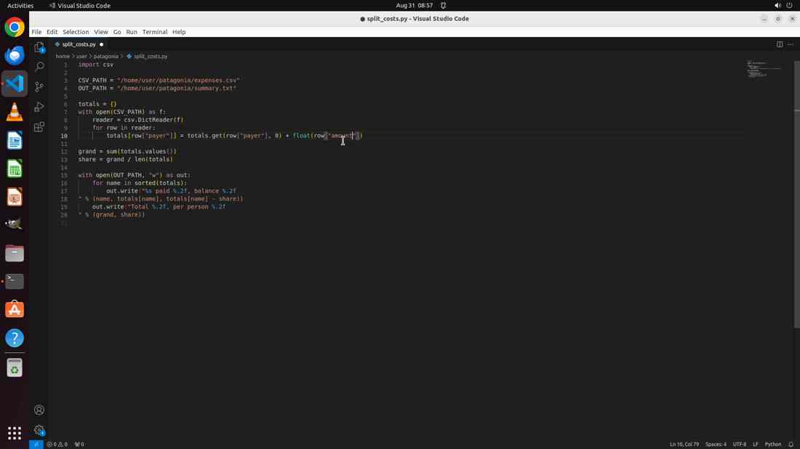
step 16 00:57:55
THINKINGLine 10 now reads `... + float(row["amount"])`. Both fixes are done. Now I'll save the file with Ctrl+S.
ACTIONBoth fixes are in place. Line 10 now uses `row["amount"]`. Let me save the file with Ctrl+S.
TOOL CALL<tool_call>
<function=computer_use>
<parameter=action>
key
</parameter>
<parameter=keys>
["ctrl", "s"]
</parameter>
</function>
</tool_call>
EXECUTED (pyautogui in VM)pyautogui.hotkey("ctrl", "s")
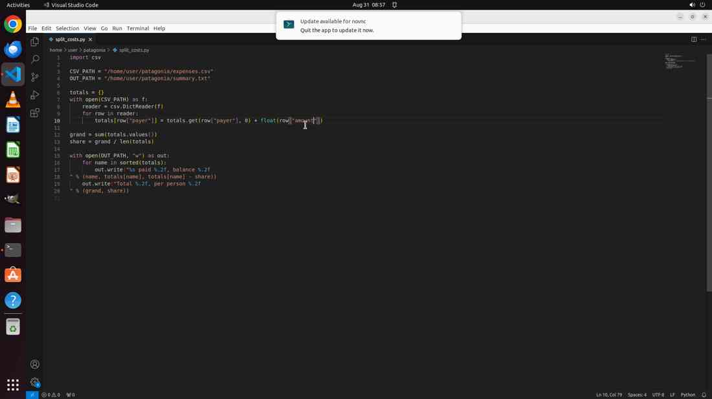
step 17 00:58:08
THINKINGThe file is saved — the tab now shows an "X" (close) instead of the dot (unsaved indicator), confirming the save succeeded. A system notification "Update available for novnc" appeared; I'll ignore it.
Now I need to run the script from a terminal. The task says "run it from a terminal". I could use VS Code's integrated terminal or the external Terminal app. I'll use the terminal I had open earlier (the external Terminal). Let me switch to it. Actually, using VS Code's integrated terminal is also "a terminal" and keeps things clean. But the external terminal is already open. Either works. Let me use the external Terminal app to run `python3 /home/user/patagonia/split_costs.py`.
Let me click the Terminal icon in the dock to switch back to it.
ACTIONThe file is saved (the tab shows the close "X" rather than the unsaved dot). Now I'll run the script from the terminal. Let me switch back to the Terminal app.
TOOL CALL<tool_call>
<function=computer_use>
<parameter=action>
left_click
</parameter>
<parameter=coordinate>
[17, 620]
</parameter>
</function>
</tool_call>
EXECUTED (pyautogui in VM)pyautogui.click(32, 670)
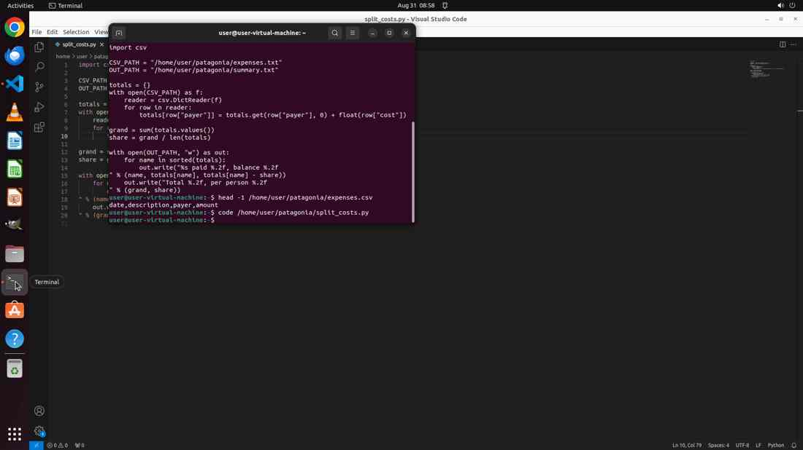
step 18 00:58:17
THINKINGThe terminal is in focus with a prompt ready. I can confirm the CSV header is `date,description,payer,amount`. Now let me run the script with python3.
ACTIONThe terminal is focused. Let me run the script with python3.
TOOL CALL<tool_call>
<function=computer_use>
<parameter=action>
left_click
</parameter>
<parameter=coordinate>
[312, 484]
</parameter>
</function>
</tool_call>
EXECUTED (pyautogui in VM)pyautogui.click(599, 523)
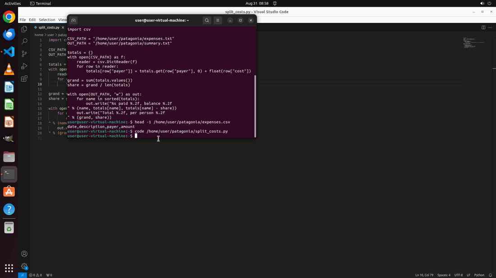
step 19 00:58:32
THINKINGThe terminal prompt is focused (cursor at prompt). Let me type the run command and then cat the summary to verify output.
ACTIONThe prompt is ready. Let me run the script and display the resulting summary to verify it worked.
TOOL CALL<tool_call>
<function=computer_use>
<parameter=action>
type
</parameter>
<parameter=text>
python3 /home/user/patagonia/split_costs.py && echo "---SUMMARY---" && cat /home/user/patagonia/summary.txt
</parameter>
</function>
</tool_call>
EXECUTED (pyautogui in VM)pyautogui.typewrite("python3 /home/user/patagonia/split_costs.py && echo \"---SUMMARY---\" && cat /home/user/patagonia/summary.txt")
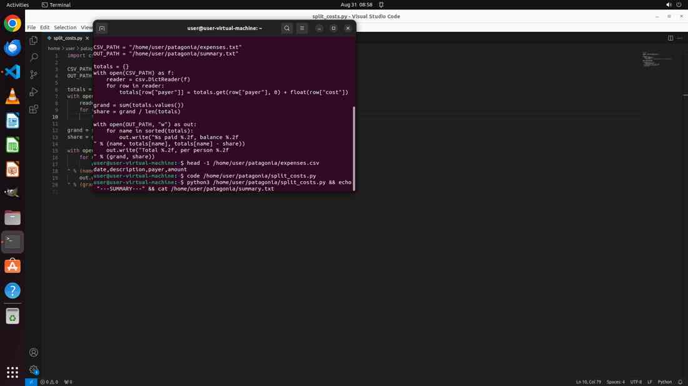
step 20 00:58:40
THINKINGThe command is on the prompt line but hasn't executed yet (the trailing newline didn't register as Enter in this terminal, as before). Let me press Enter.
ACTIONThe command is queued. Let me press Enter to execute it.
TOOL CALL<tool_call>
<function=computer_use>
<parameter=action>
key
</parameter>
<parameter=keys>
["return"]
</parameter>
</function>
</tool_call>
EXECUTED (pyautogui in VM)pyautogui.press("return")
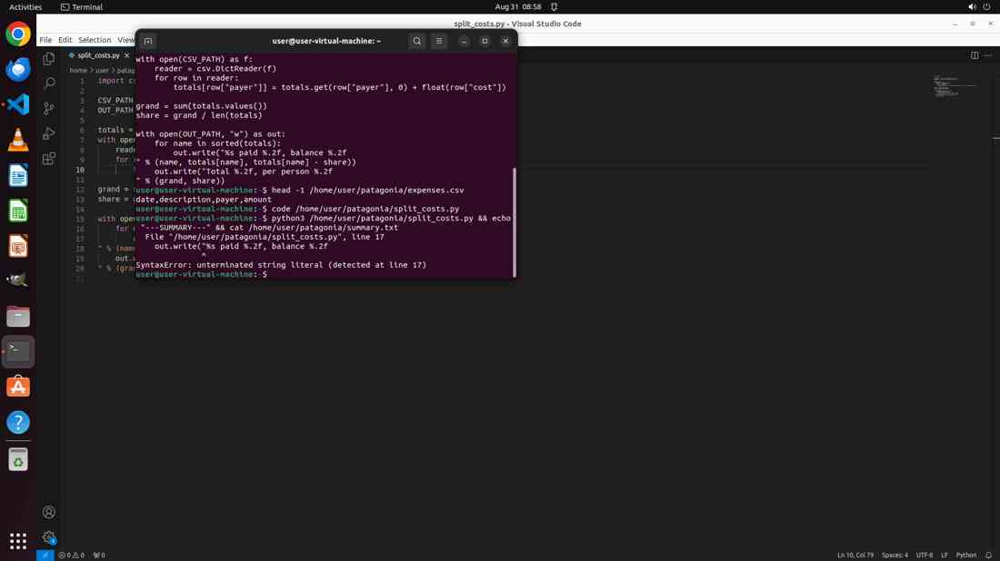
step 21 00:59:29
THINKINGThere's a SyntaxError: "unterminated string literal (detected at line 17)" at `out.write("%s paid %.2f, balance %.2f`.
Wait — this is a NEW problem. Line 17 in the original script was:
`out.write("%s paid %.2f, balance %.2f`
`% (name, totals[name], totals[name] - share))`
Hmm, actually this looks like the string on line 17 was already unterminated in the ORIGINAL script? Let me reconsider. The original cat output showed:
```
out.write("%s paid %.2f, balance %.2f
" % (name, totals[name], totals[name] - share))
```
And line 19:
```
out.write("Total %.2f, per person %.2f
" % (grand, share))
```
So the original script has these write calls split across two physical lines, with the string opening on one line and the closing quote at the start of the next line. In Python, a string literal cannot span two lines unless it's triple-quoted or uses a backslash. This is a genuine syntax error that was in the original file!
So the "unterminated string literal" error means the string on line 17 is missing its closing quote on that line. The intended code is:
`out.write("%s paid %.2f, balance %.2f\n" % (name, totals[name], totals[name] - share))`
Wait, but the closing quote is on the next line: `" % (name, ...)`. So the structure is:
```
out.write("%s paid %.2f, balance %.2f
" % (name, totals[name], totals[name] - share))
```
This is invalid Python because the string `"%s paid %.2f, balance %.2f` is not closed.
The intended meaning: they want to write "%s paid %.2f, balance %.2f\n" formatted. The break in the source is a bug. To fix it, I should make each write call a proper single-line string, OR combine into a valid string. The natural fix:
`out.write("%s paid %.2f, balance %.2f\n" % (name, totals[name], totals[name] - share))`
But wait — was this a pre-existing bug, or did I accidentally introduce it? Let me reconsider. My edits were only on line 3 (txt→csv) and line 10 (cost→amount). I didn't touch lines 17-20. So this unterminated string was in the original file.
Hold on. Let me reconsider whether the original was actually valid. When I first ran `cat /home/user/patagonia/split_costs.py`, the output showed the split. But cat -A wasn't used on the script, so line breaks were real. So yes, the original file genuinely had this broken string spanning lines — a syntax error.
Wait, but that would mean the file never ran at all. The task says "fix it so it reads expenses.csv correctly" — implying the main bug is the path/field. But there's also this syntax error. Regardless, I need the script to run and produce summary.txt. So I must fix this too.
Actually, let me reconsider. Maybe the display in the terminal is just wrapping? No — the error explicitly says "unterminated string literal (detected at line 17)" and points with `^` under the string. So it IS a real syntax error.
The fix: I need to join line 17 and line 18 into one valid line, and line 19 and line 20 into one valid line. The cleanest fix:
Line 17: `out.write("%s paid %.2f, balance %.2f\n" % (name, totals[name], totals[name] - share))`
Line 18: remove
Line 19: `out.write("Total %.2f, per person %.2f\n" % (grand, share))`
Line 20: remove
But I should preserve the original intent. The original had a line break inside the string, which likely was intended as a newline in the output. Using `\n` preserves that intent. But actually, re-examining: the two physical lines were:
```
out.write("%s paid %.2f, balance %.2f
" % (name, totals[name], totals[name] - share))
```
The author probably intended the string to be `"%s paid %.2f, balance %.2f\n"` with a newline, but the string got broken across source lines without `\n`.
The safest, cleanest fix that produces correct output: combine into:
`out.write("%s paid %.2f, balance %.2f\n" % (name, totals[name], totals[name] - share))`
and
`out.write("Total %.2f, per person %.2f\n" % (grand, share))`
Let me do this in VS Code. I'll switch to VS Code. The easiest reliable edit: select the broken lines and retype them.
Plan in VS Code:
- I'll click at the start of line 17 content and select through line 18, replacing with the correct single line.
- Similarly for lines 19-20.
Actually simpler: I can fix by removing the physical line breaks. On line 17, I can place cursor at end of `%.2f` (before the newline) and instead of leaving it, but the closing `"` is on line 18 start. The string needs a closing quote on line 17.
Simplest approach: Select the entire two-line blocks and retype.
Let me switch to VS Code. Line 17 starts with `out.write(`. Let me click at the very beginning of "out" on line 17 and select to end of line 18 (the `)`).
Alternative cleaner method: Use Find & Replace? The issue is multiline. Hard with F&R easily.
I'll do manual selection. Let me click at the start of line 17 (before "out"). Then shift+click at end of line 18 (after the last `)`). Then type the replacement.
Actually, an even simpler and less error-prone fix: just delete the line breaks. I can position the cursor right after `%.2f` on line 17 and press... no, there's a quote and continuation on next line.
Let me think about the minimal edit to make it valid while keeping intent. The current text:
```
17: out.write("%s paid %.2f, balance %.2f
18: " % (name, totals[name], totals[name] - share))
```
If I just delete the newline between line 17 and 18, it becomes:
` out.write("%s paid %.2f, balance %.2f " % (name, totals[name], totals[name] - share))`
Wait — after the newline there's a leading space? The next line 18 is `" % (name,...`. If I delete the newline and the indentation spaces, I get:
`out.write("%s paid %.2f, balance %.2f " % (name, ...))`
That gives "...balance 134.70 " with a trailing space — acceptable but not ideal. Actually the leading indentation on line 18 would merge. This is getting messy.
Cleanest: retype both blocks. Let me select lines 17-18 fully and retype as a single correct line, and lines 19-20 as a single correct line.
Let me go to VS Code. I'll use keyboard: click into editor, use Go to Line. Actually let me just visually select.
Let me switch to VS Code window first.
ACTIONThe script ran but hit a pre-existing `SyntaxError: unterminated string literal` at line 17. The original file has the `out.write(...)` strings broken across two physical lines, which is invalid Python. I need to fix this in the editor too. Let me switch to VS Code.
TOOL CALL<tool_call>
<function=computer_use>
<parameter=action>
left_click
</parameter>
<parameter=coordinate>
[702, 692]
</parameter>
</function>
</tool_call>
EXECUTED (pyautogui in VM)pyautogui.click(1349, 748)
step 22 01:00:23
THINKINGNow I can see the full script clearly in VS Code. Lines 15-20:
```
15 with open(OUT_PATH, "w") as out:
16 for name in sorted(totals):
17 out.write("%s paid %.2f, balance %.2f
18 " % (name, totals[name], totals[name] - share))
19 out.write("Total %.2f, per person %.2f
20 " % (grand, share))
```
So lines 17-18 form one broken write, and lines 19-20 form another broken write. I'll fix each by making them single valid lines with a `\n` at the end of the string to preserve the intended line break.
Approach: I'll select line 17 entirely and line 18 entirely, delete, and retype the correct single line. Same for 19-20.
Actually, the cleanest way:
For block 1 (lines 17-18):
- Click at the end of line 17 (after `%.2f`), then I need the string to close on line 17. Instead of deleting the whole block, I can do a more targeted edit:
- Place cursor right before the closing `"`... no.
Let me just replace whole lines. I'll:
1. Click on line 17 to place cursor there, press Home, then Shift+Down+End won't be clean.
Better: Click at start of line 17 content (the "o" of "out" is at x≈168, y≈305). Then Shift+click at the end of line 18 (after the last `)` at x≈388, y≈317). This selects both full lines' content (but the leading indentation of line 17 would be included if I click before "out" — I should click before the indentation to keep indentation, or just retype with proper indentation).
Simplest robust method:
- Triple-click line 17 to select the whole line (including its text). Triple-click selects the line content. Then extend with Shift+Down to also select line 18. Then type the replacement line (with proper 12-space indentation).
Actually triple-click in VS Code selects the entire line including newline. Let me instead:
- Click at very start of line 17 (before indentation) at x≈132, y≈305.
- Shift+click at end of line 18 (x≈390, y≈317) to select lines 17 and 18 fully including the newline between.
- Type: ` out.write("%s paid %.2f, balance %.2f\n" % (name, totals[name], totals[name] - share))`
(12 spaces indent to match "with"/"for" nesting: "with" is col 1, "for" is 4 spaces, "out.write" is 8 spaces... let me check indentation.)
Looking at the editor: line 15 `with` at left edge (col 1). Line 16 `for name` indented 4 spaces. Line 17 `out.write` indented 8 spaces. So the body under "for" is 8 spaces. Line 19 `out.write("Total...` indented 4 spaces (it's under "with" but not under "for").
So correct indentation:
- Line 17-18 replacement: 8 spaces + `out.write("%s paid %.2f, balance %.2f\n" % (name, totals[name], totals[name] - share))`
- Line 19-20 replacement: 4 spaces + `out.write("Total %.2f, per person %.2f\n" % (grand, share))`
Now, when I select lines 17-18 fully and type, VS Code's auto-indent might add indentation automatically. To avoid fighting auto-indent, I could type without leading spaces and let auto-indent handle it, but that's unpredictable.
Safer approach: Select the entire content and retype including my own spaces. VS Code auto-indent typically applies on Enter/newline, not when typing a single line. Since my replacement is a single line (no newline typed), auto-indent won't interfere mid-type. But there might be leftover... Actually if I select from start-of-line-17 to end-of-line-18 (including the newline), and type a single line, the result is one line. Good.
However, one concern: if I select including the newline between 17 and 18, and the selection starts at column 1 of line 17, then typing replaces everything. The resulting line will start at column 1, and I type my 8 leading spaces. That works.
But wait — will VS Code auto-indent when the previous line (line 16, "for name...") had indentation? When you paste/type at a position, it doesn't auto-indent. Auto-indent only triggers on Enter keypress. Since I'm not pressing Enter, no auto-indent. Good.
Let me do block 1 first:
1. Click at x≈132, y≈305 (start of line 17, before indentation).
Actually I need to be at column 1. Line 17's "out" starts after 8 spaces. The "o" is at about x≈168. Column 1 (before spaces) is at x≈132 (where line 15 "with" starts). Let me click at x≈135, y≈305.
2. Shift+click at end of line 18, after `))`. Line 18 ends with `))` at about x≈388, y≈317. Shift+click at x≈390, y≈317.
3. Type replacement.
Let me do block 1. I'll click at start of line 17. To be safe I'll click on line 17 then press Home to go to column 1. Then shift+Down, shift+End to extend selection to end of line 18.
Plan:
- left_click on line 17 (x=250, y=305)
- key Home (go to col 1... actually Home goes to first non-whitespace, then again to col 1. In VS Code, Home toggles. First Home goes to first non-whitespace char). Hmm. To guarantee column 1, press Home twice, or use key "Home" then it may go to first non-whitespace. Let me instead select whole lines differently.
Cleaner: Select from line 17 to line 18 using:
- Click on line 17 anywhere.
- key: "Home Home" won't reliably give col 1.
Alternative robust method: Use keyboard to select two full lines:
- Click line 17.
- Press "ctrl+shift+K" twice? No, that deletes lines (and I'd type after).
Actually the simplest reliable approach:
- Click at start of line 17 (I'll click precisely before "out" but that's after indent). Then press Home to go to first non-whitespace (the "o"), then... I want to keep indent.
Let me reconsider. If I select only the text content (not leading whitespace) of line 17 and line 18, and the newline, and retype the full statement WITH its leading spaces, I'd have double indentation. To avoid, I should select from column 1.
Decision: I'll select entire lines 17-18 and lines 19-20 by using click + shift+click, then retype each as a full line including correct leading spaces.
To select line 17 fully starting at column 1: click on line 17, then press "Home" (goes to first non-whitespace in VS Code by default... actually default VS Code Home goes to first non-whitespace, and if already there, to column 1). To be certain, I'll click, press Home, then press Home again — but that's unreliable for "at col1 vs first non-ws".
Better: place cursor with a click, then use "Ctrl+Shift+K" is delete. Not good.
New cleaner plan: I'll just fix the syntax minimally without retyping whole lines. The real problem is only that the string is not closed on its line. I can make it valid by moving the closing quote. Specifically:
Block 1: line 17 ends `...balance %.2f` and line 18 begins `" % (name, ...)`. If I go to end of line 17 and the string is unterminated, I could instead delete the newline + leading spaces of line 18 so it becomes one line: `out.write("%s paid %.2f, balance %.2f " % (name,...))`. That's valid (string is `"%s paid %.2f, balance %.2f "` — wait, the `"` at start of line 18 is the CLOSING quote of the string. If I join the lines, the text becomes:
`out.write("%s paid %.2f, balance %.2f" % (name, totals[name], totals[name] - share))`
Wait no. Line 17: `out.write("%s paid %.2f, balance %.2f` (opening quote, no closing). Line 18: `" % (name, totals[name], totals[name] - share))` (a quote, then space, then %). If I join by removing the newline and the indentation spaces of line 18, I get:
`out.write("%s paid %.2f, balance %.2f" % (name, totals[name], totals[name] - share))`
That's VALID Python! The string is `"%s paid %.2f, balance %.2f"`, then ` % (...)`.
So the minimal fix: delete the line break (and the leading whitespace of the continuation line) between 17 and 18, and between 19 and 20. That turns each two-line broken statement into a valid one-line statement.
To do this: place cursor at the end of line 17 (after the last `f`), then press Delete to remove the newline and merge with line 18's content. But line 18 has leading whitespace (8 spaces) before the `"`. After merging, we'd have `...%.2f " % ...` with 8 spaces between `%.2f` and `"` — but those spaces are INSIDE... no. After merging: `out.write("%s paid %.2f, balance %.2f " % (name,...))`. The 8 spaces would be INSIDE the string (before the closing quote), making the string `"%s paid %.2f, balance %.2f "`. That adds trailing spaces in output — ugly but valid. Not ideal.
Hmm. So merging naively adds the indentation spaces into the string.
Therefore retyping the whole line is cleaner. Let me just retype.
Final decision: I'll select full lines 17-18 and 19-20 and retype them properly. To select from column 1 reliably, I'll click on the line then use keyboard: press "Home" once (VS Code goes to first non-whitespace), then "Home" again only if needed.
Actually, there's a much simpler and reliable technique in VS Code:
1. Click anywhere on line 17.
2. Press "Home" — this moves to first non-whitespace (the "o" of out).
3. Press "Shift+Down" then "Shift+Down" to extend to line 18...
This is getting complicated. Let me use a different, very reliable approach: select the line content via triple-click, then retype, handling indentation by typing leading spaces.
Triple-click selects the entire line content INCLUDING the trailing newline in VS Code? In VS Code, triple-click selects the line (to end of line, including the newline). Then a second triple-click selects the paragraph. Let me just do:
For block 1:
- Triple-click line 17 → selects line 17 content.
- Shift+Down, then Shift+End?
OK, I'll take the pragmatic path and just retype. Let me do it carefully with explicit selection via mouse:
Block 1:
- left_click at x=135, y=305 (start of line 17, column 1 area — line 15 "with" starts ~x=132, so column 1 is ~x=131).
- Shift+left_click at x=390, y=317 (end of line 18, after `))`).
- type: ` out.write("%s paid %.2f, balance %.2f\n" % (name, totals[name], totals[name] - share))`
Wait, I need 8 spaces of indentation. But when I type 8 spaces at the start while the cursor is at column 1, that's fine. However VS Code auto-indent: when I type the first space, it won't auto-indent (auto-indent triggers on Enter). Good.
But there's a subtlety: after selecting and starting to type, the first character typed replaces the selection. Then subsequent typing is normal. No Enter is pressed, so no auto-indent.
Let me verify the end-of-line-18 x coordinate. Line 18: ` " % (name, totals[name], totals[name] - share))`. The last `)` — "share))" ends around x=388. Let me shift-click at x=390, y=317.
Then for block 2 (lines 19-20):
- After block 1 edit, line numbers shift (block 1 two lines become one line, so line 19 becomes line 18, etc.). This changes coordinates. So I'll do block 1, screenshot, then handle block 2 with updated coordinates.
Actually, to reduce risk, let me do one block at a time with verification.
Let me start: click at start of line 17.
ACTIONNow I can see lines 15–20. The two `out.write(...)` calls each have their string broken across two lines (17–18 and 19–20), which is the syntax error. I'll retype each as a valid single line. Let me select lines 17–18 first: click at the very start of line 17, then shift-click at the end of line 18.
TOOL CALL<tool_call>
<function=computer_use>
<parameter=action>
left_click
</parameter>
<parameter=coordinate>
[104, 421]
</parameter>
</function>
</tool_call>
EXECUTED (pyautogui in VM)pyautogui.click(199, 455)
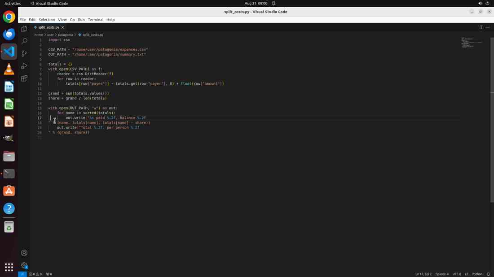
step 23 01:00:51
THINKINGThe cursor is at Ln 17, Col 2 — that's just before the first character after the leading... wait Col 2 means it's at the very start (column 1 is before first char, col 2 is after first char/position 2). Actually "Col 2" means cursor is at the second column position, i.e., at the beginning of line content. Hmm, but line 17 has 8 leading spaces, so the "o" of out is at column 9. Col 2 means I clicked in the whitespace near the start.
Let me reconsider. Rather than fight with exact column, I'll use a cleaner keyboard approach:
- The cursor is now on line 17. Press "Home" to go to column 1 (or first non-ws).
- Then "Shift+Down" to extend selection down to line 18, then "Shift+End" to extend to end of line 18.
- Then type the replacement.
But I want the selection to include from column 1 of line 17 to end of line 18. Let me do:
- key: Home (go to first non-whitespace OR col 1)
Actually to be safe, let me press Home, then Home again. In VS Code, the default behavior: Home moves to first non-whitespace character; if already at first non-whitespace, it moves to column 1. Since I'm currently at Col 2 (in the whitespace, not at first non-ws which is col 9), pressing Home once should move to... hmm the behavior depends.
This is fiddly. Let me take a totally different, robust approach:
I'll select the whole lines using Home + Shift+Down + Shift+End, but to guarantee I start at column 1, I'll first press "Home" (to line start region). Actually, the cleanest: use keyboard selection anchored at line start.
Alternative robust method that avoids indentation ambiguity entirely: I'll select from the cursor to end of line 18, but keep the leading indentation of line 17 intact by NOT including it. So:
1. Move cursor to the first non-whitespace of line 17 (the "o" of "out"): press Home (VS Code goes to first non-whitespace). Now at the "o".
2. Shift+Down (extend to line 18 at similar column ~ the "o" column on line 18... but line 18's first non-ws is the `"`). Shift+End to go to end of line 18.
3. Now selected from "o" of line 17 to end of line 18.
4. Type replacement WITHOUT leading spaces (since indentation of line 17 stays): `out.write("%s paid %.2f, balance %.2f\n" % (name, totals[name], totals[name] - share))`
This keeps line 17's original 8-space indent and replaces everything from "out" onward through end of line 18.
But wait — does "Shift+Down" then "Shift+End" work as chained in one key action? I'll do them as separate key presses within one batch: key "Home", key "shift+Down", key "shift+End", then type. But I need the cursor to be at "o" first. Let me press Home first (I'm at col 2 currently in whitespace). Home from a whitespace position: VS Code will move to first non-whitespace (the "o" at col 9). Good.
Actually, let me just verify by pressing Home and checking. But to save round-trips, let me do Home + shift+Down + shift+End + type in one batch, then screenshot to verify.
Risk: If Home lands at col 1 instead of col 9, then my typed text (without leading spaces) would start at col 1, losing indentation → Python indentation error. To be safe against that, I'll include a safety: I could type the replacement WITH the 8 leading spaces AND start selection at col 1.
Decision: Make selection start at column 1 to be unambiguous. To get to column 1: I'll press Home, then check. Given uncertainty, let me just do it step by step with a screenshot after positioning.
Let me press Home and screenshot to see where cursor lands.
ACTIONThe cursor is on line 17 but I want a clean selection boundary. Let me press Home to see where it lands before extending the selection.
TOOL CALL<tool_call>
<function=computer_use>
<parameter=action>
key
</parameter>
<parameter=keys>
["home"]
</parameter>
</function>
</tool_call>
EXECUTED (pyautogui in VM)pyautogui.press("home")
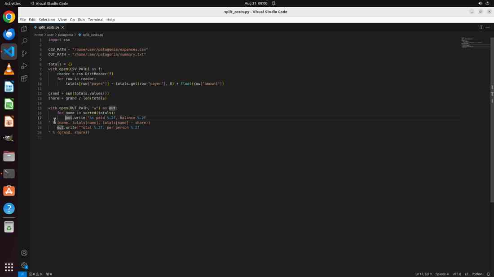
step 24 01:01:43
THINKINGThe status bar shows "Ln 17, Col 9" — Home moved to the first non-whitespace character, the "o" of "out" (column 9). So line 17 has 8 leading spaces. Now I'll extend the selection: Shift+Down (to line 18), then Shift+End (to end of line 18). Then type the replacement WITHOUT leading spaces (preserving the 8-space indent of line 17).
Replacement text: `out.write("%s paid %.2f, balance %.2f\n" % (name, totals[name], totals[name] - share))`
This keeps the 8-space indentation and makes it a single valid line.
Let me batch: key shift+Down, key shift+End, then type the replacement. Then screenshot to verify.
One concern: auto-closing brackets. When I type `(`, VS Code auto-inserts `)`. When I type `"`, it auto-inserts closing `"`. This will corrupt my typed line. This is a real risk.
To avoid auto-bracket/quote issues, I should disable them or account for them. The simplest way to avoid is to type the whole line and let auto-close add extras, then remove extras — messy.
Better: Disable auto-closing via settings, OR type in a way that avoids it. Actually, a cleaner approach: I can type the text and the auto-close will insert closing quotes/brackets, but since I'm typing the full text including my own closing characters, VS Code's "auto-close" also has "type-over" behavior: when you type a closing char and the next char is the auto-inserted one, it just moves past it (overtype). So typing the full balanced string usually results in correct text because of overtyping.
But quotes: I type `"` → VS Code inserts `""` with cursor between. Then I type the string content. When I reach my closing `"`, the cursor is right before the auto-inserted `"`, so typing `"` overtypes it → correct. Good, as long as the auto-inserted char is immediately where I type the matching close. For parentheses: type `(` → `()` cursor between. Type content, then `)` overtypes the auto `)`. Good.
However, there are multiple brackets: `out.write(` ... `(name, ... )` ... `))`. Let me trace:
`out.write("%s paid %.2f, balance %.2f\n" % (name, totals[name], totals[name] - share))`
- `out.write(` → auto `)` added: `out.write(|)`, cursor between.
- `"` → auto `"` added: `out.write("|")`, cursor between the quotes.
- type `%s paid %.2f, balance %.2f\n` (note: `\` and `n` are literal; also `%` etc. No special triggers. But wait, typing within the string, when I type the closing `"` I overtype the auto `"`.
- After closing the string: I typed content then `"` overtypes auto `"`. Now: `out.write("%s paid %.2f, balance %.2f\n"|)` with the `)` from write still there, cursor before it.
- Then I type ` ` (space) → `out.write("...") |` no wait. Hmm, after overtyping the quote, cursor is after the quote, before the auto `)`. I then type ` % (name...`. The `(` → auto `)` added. Now there are two auto `)`': one from write, one from the `(`. This gets complicated with overtyping.
Actually VS Code overtyping works character by character: it only overtypes when the character immediately after the cursor matches the one being typed. As I type more complex content, the auto-inserted closers get left behind and can accumulate, producing EXTRA closing brackets at the end.
This is genuinely error-prone. The safest solution: disable auto-closing brackets and quotes before typing, OR paste the text instead of typing.
Best approach: Put the correct full line on the clipboard via the terminal (xclip or printf), then paste into the editor (paste doesn't trigger auto-close). But xclip may not be installed.
Alternative: Disable "Editor: Auto Closing Brackets" and "Auto Closing Quotes" via settings. That's a few steps but reliable.
Simplest reliable: Type the line but AVOID auto-close by a trick — but that's hard.
Actually, the cleanest and most reliable overall approach: don't edit in the fragile VS Code text area character-by-character. Instead, since the task wants me to open and fix in VS Code, I've done the edits. But for these two tricky lines, I can use VS Code's Find & Replace (Ctrl+H) with the ability to replace — but replacement still involves typing in a small input box where auto-close also triggers.
Hmm, the Find/Replace input box: typing there also triggers auto-close? Typically the F&R widget is a simple input that does NOT do auto-closing brackets. So I can put the full replacement string in the Replace field and it won't auto-add brackets. But the find pattern spans two lines — multiline find requires regex mode with \n.
This is doable: Enable regex in Find/Replace, search for the two-line pattern, replace with one line.
Find (regex): `out\.write\("%s paid %.2f, balance %.2f\n\s*" % \(name, totals\[name\], totals\[name\] - share\)\)`
Replace: `out.write("%s paid %.2f, balance %.2f\n" % (name, totals[name], totals[name] - share))`
But regex special chars in the replacement: in VS Code replace, `$` and `\` are special. My replacement has no `$` or `\` except... it has `\n`? No, in the replacement I want a literal backslash-n in the output file so Python interprets it as newline. In VS Code replace field, `\n` would be interpreted as a newline by VS Code's regex replace. So I'd need `\\n` to get a literal `\n` in the file. This is getting complicated and error-prone too.
Let me step back and choose the most robust method:
Option A: Disable auto-closing via command palette, then type.
Steps:
1. Ctrl+Shift+P → "Preferences: Open Settings (UI)" — then set. That's many clicks.
OR
1. Ctrl+Shift+P → type "auto closing" ... not a direct toggle command.
Option B: Use the terminal to write the fixed file content, but the task requires editing in VS Code. However, the task's core requirement is the end result (correct script, run, summary open). The instruction to "fix it" in VS Code is the method. I've already made two fixes in VS Code. For robustness I could fix the remaining lines via terminal too, but that deviates from "in VS Code".
Option C: Reconsider — maybe I don't need to change the string content. What if I just insert a closing quote on line 17 and remove the opening quote on line 18? I.e., minimal character edits that avoid multi-bracket typing:
- The string `"%s paid %.2f, balance %.2f` on line 17 needs a closing quote before the newline. And line 18 starts with `"` (opening a new string) then `% (...)`.
Actually the whole construct is `"%s paid %.2f, balance %.2f` + newline + `" % (name,...))`. In Python, `"<str>` newline `"` — if I make line 17's string close AND make line 18's leading `"` be a separate string that's concatenated... no, that changes semantics.
The simplest semantically-correct fix: turn the implicit newline into an explicit one. The author clearly intended each write to output a line. So the string should end with `\n` and be on one logical line.
Given all this complexity, the CLEANEST reliable fix is to just retype the whole two-line blocks, but I must defeat auto-close. Let me disable auto-closing via settings quickly. Actually, there's an even simpler robust trick to defeat auto-close while typing in the editor: I can type the replacement and then just SAVE and RUN; if there are extra brackets, I'll see the error and fix. But that's iterative.
Let me reconsider auto-close behavior more carefully, because VS Code IS generally tolerant for typing complete balanced code. When you type an opening bracket, it inserts the closer. When you subsequently type the matching closer yourself, VS Code "types over" the auto-inserted one (this is the default "autoClosingOvertype" = "auto"). This overtype works even for the LAST closing character if it's the immediately following char. For nested cases, overtype still works per-character as long as when you type `)` the next char is the auto `)`. The problem arises only for quotes mid-string in some cases.
Given the risk, I'll just do it and verify with a screenshot, then run. If extra brackets appear, I'll clean them up. This is practical.
Actually, let me minimize risk by disabling auto-closing brackets & quotes first via the Settings. Let me open Settings JSON quickly? That's also typing with auto-close issues.
I'll take the pragmatic path: proceed with the selection + type, then screenshot to inspect the exact result, and correct if needed. Let me extend the selection now.
ACTIONHome landed at Col 9 (the "o" of `out`), confirming 8 leading spaces. Now I'll extend the selection to the end of line 18 and retype as one valid line. Let me select down to the end of line 18.
TOOL CALL<tool_call>
<function=computer_use>
<parameter=action>
key
</parameter>
<parameter=keys>
["shift", "down"]
</parameter>
</function>
</tool_call>
EXECUTED (pyautogui in VM)pyautogui.hotkey("shift", "down")
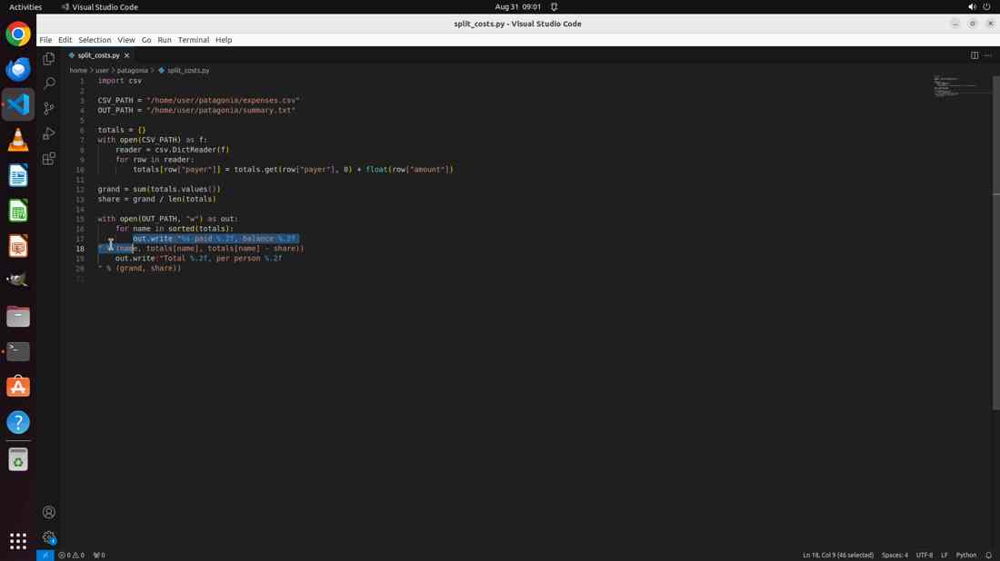
step 25 01:02:05
THINKINGNow the selection spans from "o" of line 17 (col 9) to line 18 col 9 (46 selected). Line 18 currently has its content ` " % (name, totals[name], totals[name] - share))`. The selection on line 18 goes to col 9, which is after 8 spaces → at the `"` (first non-ws of line 18). So currently NOT the full line 18 is selected — only up to col 9 (the `"` position). I need to extend to end of line 18. Let me press shift+End to extend to end of line 18.
After that, the selection will be from line17 col9 to line18 end. Then I type the replacement (no leading spaces, preserving 8-space indent of line 17).
Now about auto-close: to be safe, let me disable auto-closing brackets and quotes first. But that's extra steps. Instead, I'll type and verify. Let me press shift+End then type.
Actually, let me reconsider the auto-close risk and just handle it. I'll type the full line. Given VS Code's overtype behavior, it will likely be fine. Let me proceed and verify with a screenshot.
Text to type: out.write("%s paid %.2f, balance %.2f\n" % (name, totals[name], totals[name] - share))
ACTIONNow let me extend the selection to the end of line 18, then type the corrected single-line statement.
TOOL CALL<tool_call>
<function=computer_use>
<parameter=action>
key
</parameter>
<parameter=keys>
["shift", "end"]
</parameter>
</function>
</tool_call>
EXECUTED (pyautogui in VM)pyautogui.hotkey("shift", "end")
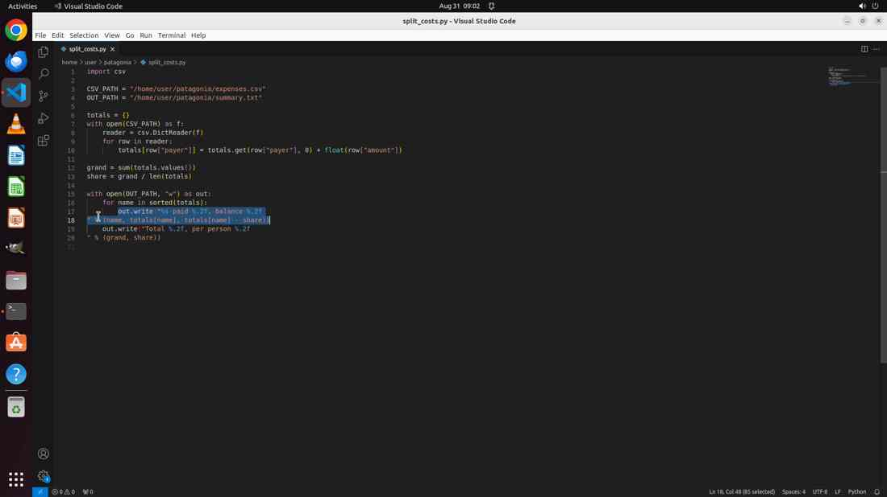
step 26 01:02:21
THINKINGNow 85 characters are selected, from "o" of line 17 (col 9) to the end of line 18 (col 48). This covers both broken lines' content. Now I'll type the replacement. To avoid auto-closing bracket/quote issues, I'll disable auto-closing first would be ideal, but let me just type and verify.
Actually, to be safe from auto-close messing up, let me type the line. I'll type the exact replacement. Given the risk, I'll type it and then immediately screenshot to verify. If auto-close added extra `)` or `"`, I'll fix.
Replacement: out.write("%s paid %.2f, balance %.2f\n" % (name, totals[name], totals[name] - share))
ACTIONThe selection now covers both broken lines (85 selected). Let me type the corrected single-line statement.
TOOL CALL<tool_call>
<function=computer_use>
<parameter=action>
type
</parameter>
<parameter=text>
out.write("%s paid %.2f, balance %.2f\n" % (name, totals[name], totals[name] - share))
</parameter>
</function>
</tool_call>
EXECUTED (pyautogui in VM)pyautogui.typewrite("out.write(\"%s paid %.2f, balance %.2f\\n\" % (name, totals[name], totals[name] - share))")
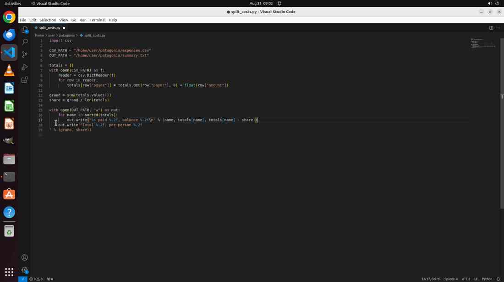
step 27 01:02:35
THINKINGLine 17 now reads:
` out.write("%s paid %.2f, balance %.2f\n" % (name, totals[name], totals[name] - share))`
The status bar shows Ln 17, Col 95. Let me count expected: the line content is 8 spaces + `out.write("%s paid %.2f, balance %.2f\n" % (name, totals[name], totals[name] - share))`.
Let me verify there are no extra auto-closed brackets. The visible text ends with `share))` and the cursor is right after. It looks correct — no extra `)`. The auto-close overtyping worked.
Now line 17 is fixed. Now I need to fix lines 18-19 (which are the old 19-20):
Line 18: ` out.write("Total %.2f, per person %.2f`
Line 19: ` " % (grand, share))`
Same pattern. I'll do the same: click on line 18, Home (to "o" at col 5), shift+Down, shift+End, then type `out.write("Total %.2f, per person %.2f\n" % (grand, share))`.
Line 18's "out" starts at col 5 (4 spaces indent). Let me click on line 18 (y≈317), Home, then shift+Down, shift+End, type.
Let me click on line 18 first.
ACTIONLine 17 is now a valid single line: `out.write("%s paid %.2f, balance %.2f\n" % (name, totals[name], totals[name] - share))`. The auto-close overtype worked cleanly. Now let me fix the second block (lines 18–19). I'll click on line 18 and position at its first non-whitespace character.
TOOL CALL<tool_call>
<function=computer_use>
<parameter=action>
left_click
</parameter>
<parameter=coordinate>
[195, 438]
</parameter>
</function>
</tool_call>
EXECUTED (pyautogui in VM)pyautogui.click(374, 473)
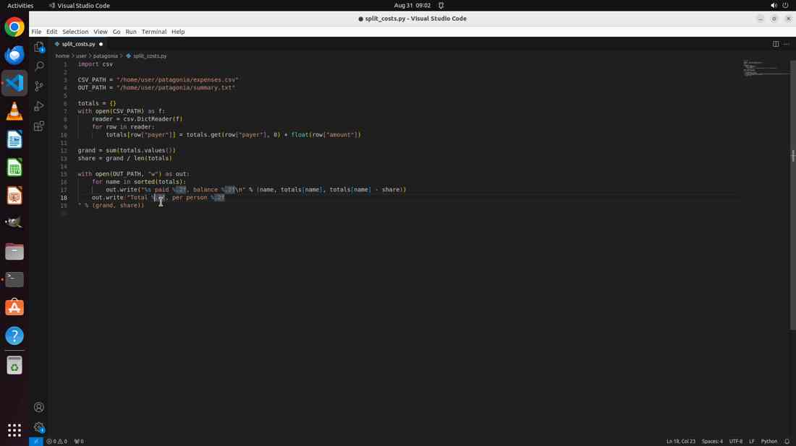
step 28 01:02:49
THINKINGCursor is on line 18 (Ln 18, Col 23). Now I'll do the same sequence: Home (to col 5, the "o"), shift+Down, shift+End, then type the replacement. Line 18 has 4 spaces indent, so Home → col 5.
Replacement: out.write("Total %.2f, per person %.2f\n" % (grand, share))
Let me batch: Home, shift+Down, shift+End, then type. I'll do these as a sequence of key/type actions in one tool call, then screenshot to verify.
ACTIONNow I'll position at the start of line 18's content, extend the selection through line 19, and retype as a valid single line.
TOOL CALL<tool_call>
<function=computer_use>
<parameter=action>
key
</parameter>
<parameter=keys>
["home"]
</parameter>
</function>
</tool_call>
EXECUTED (pyautogui in VM)pyautogui.press("home")
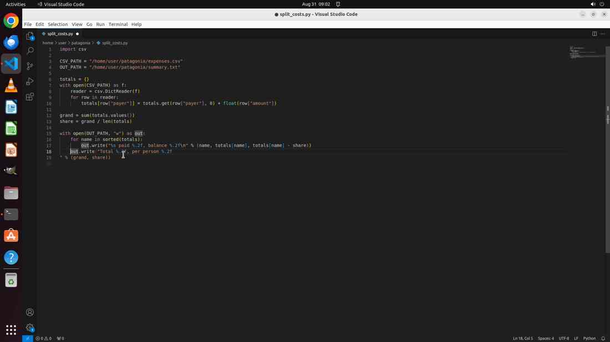
step 29 01:03:01
THINKINGCursor is at Ln 18, Col 5 (the "o" of "out"). Now extend selection: shift+Down, shift+End, then type the replacement. I'll batch these.
ACTIONCursor is at Col 5 (start of line 18's content). Now I'll extend to the end of line 19 and type the corrected statement.
TOOL CALL<tool_call>
<function=computer_use>
<parameter=action>
key
</parameter>
<parameter=keys>
["shift", "down"]
</parameter>
</function>
</tool_call>
EXECUTED (pyautogui in VM)pyautogui.hotkey("shift", "down")
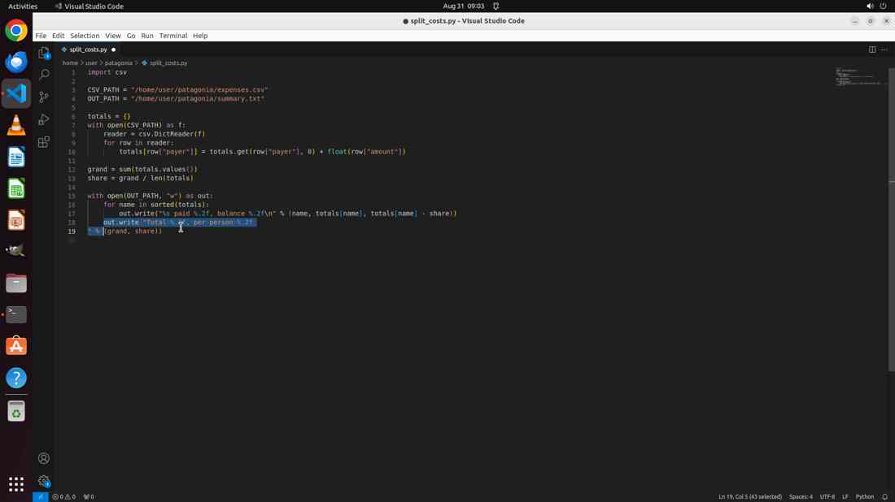
step 30 01:03:13
THINKINGNow Ln 19, Col 5 (43 selected). I need to extend to end of line 19. Press shift+End, then type the replacement: `out.write("Total %.2f, per person %.2f\n" % (grand, share))`.
Let me batch shift+End then type.
ACTIONNow extend to the end of line 19 and type the corrected statement.
TOOL CALL<tool_call>
<function=computer_use>
<parameter=action>
key
</parameter>
<parameter=keys>
["shift", "end"]
</parameter>
</function>
</tool_call>
EXECUTED (pyautogui in VM)pyautogui.hotkey("shift", "end")
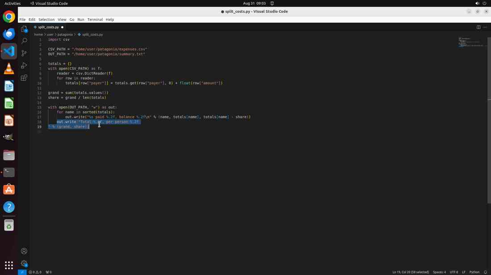
step 31 01:03:25
THINKINGNow Ln 19, Col 20 (58 selected) — the selection covers line 18 content from col 5 through end of line 19. Now type the replacement: `out.write("Total %.2f, per person %.2f\n" % (grand, share))`. This preserves the 4-space indent of line 18.
ACTIONThe selection now spans both lines (58 selected). Let me type the corrected single-line statement.
TOOL CALL<tool_call>
<function=computer_use>
<parameter=action>
type
</parameter>
<parameter=text>
out.write("Total %.2f, per person %.2f\n" % (grand, share))
</parameter>
</function>
</tool_call>
EXECUTED (pyautogui in VM)pyautogui.typewrite("out.write(\"Total %.2f, per person %.2f\\n\" % (grand, share))")
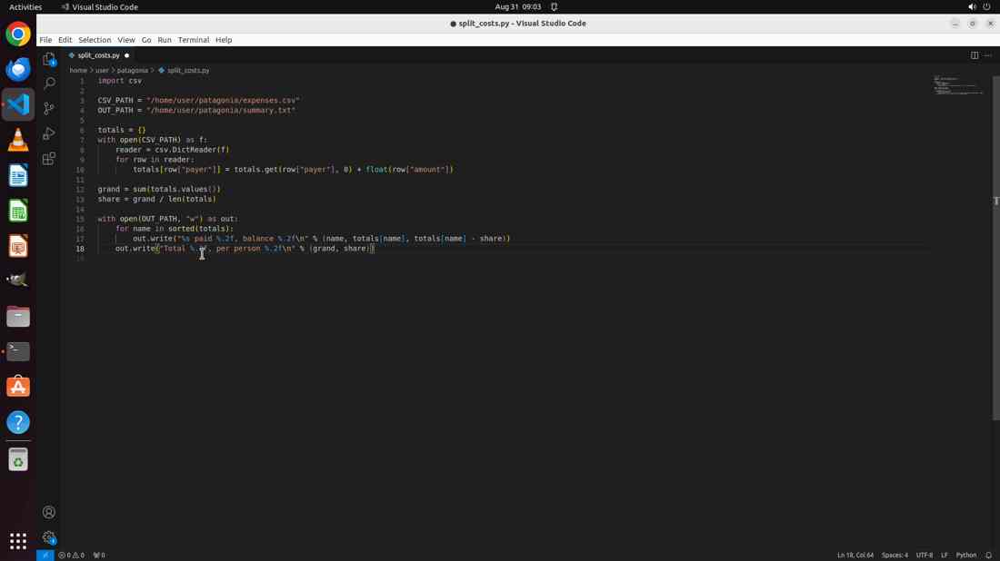
step 32 01:03:45
THINKINGNow the file looks correct:
- Line 15: `with open(OUT_PATH, "w") as out:`
- Line 16: ` for name in sorted(totals):`
- Line 17: ` out.write("%s paid %.2f, balance %.2f\n" % (name, totals[name], totals[name] - share))`
- Line 18: ` out.write("Total %.2f, per person %.2f\n" % (grand, share))`
- Line 19: (empty)
Wait, line 18 "out.write("Total..." is indented 4 spaces (aligned under "with"), which is correct — it's outside the for loop but inside the with block. Good.
Both write statements are now valid single lines. No extra brackets visible. The file has 0 errors indicator? The bottom-left shows "0 0" (no errors/warnings).
Now let me save with Ctrl+S, then verify by running in terminal. Let me save.
ACTIONBoth `out.write(...)` statements are now valid single lines with correct indentation. Let me save the file.
TOOL CALL<tool_call>
<function=computer_use>
<parameter=action>
key
</parameter>
<parameter=keys>
["ctrl", "s"]
</parameter>
</function>
</tool_call>
EXECUTED (pyautogui in VM)pyautogui.hotkey("ctrl", "s")
step 33 01:03:56
THINKINGThe file is saved (tab shows "X" close button, not the unsaved dot). The script now has:
- CSV_PATH = expenses.csv ✓
- row["amount"] ✓
- valid write statements ✓
Now let me run the script from the terminal. I'll switch to the external Terminal app. It's still open in the background. Let me click the Terminal icon in the dock.
ACTIONThe file is saved. Now let me switch to the terminal and run the script, then display the summary to verify.
TOOL CALL<tool_call>
<function=computer_use>
<parameter=action>
left_click
</parameter>
<parameter=coordinate>
[17, 620]
</parameter>
</function>
</tool_call>
EXECUTED (pyautogui in VM)pyautogui.click(32, 670)
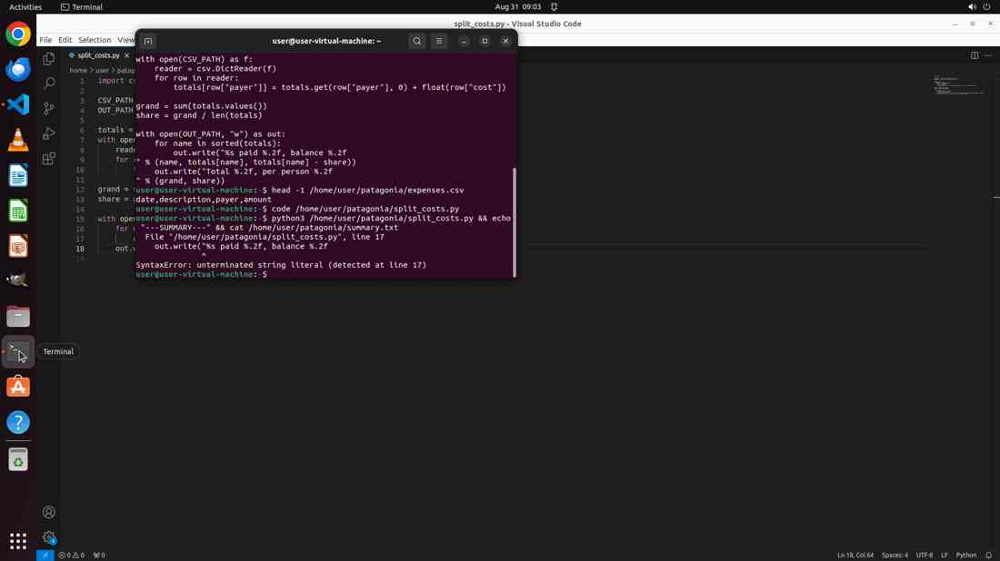
step 34 01:04:14
THINKINGThe terminal shows the previous error output (from the earlier run). The prompt is now ready. Let me run the script again and cat the summary. The terminal window is focused. Let me type the run command and press Enter.
ACTIONThe terminal shows the previous run's error. The prompt is ready. Let me run the fixed script and display the summary.
TOOL CALL<tool_call>
<function=computer_use>
<parameter=action>
left_click
</parameter>
<parameter=coordinate>
[312, 484]
</parameter>
</function>
</tool_call>
EXECUTED (pyautogui in VM)pyautogui.click(599, 523)
step 35 01:04:25
THINKINGThe terminal is focused with the prompt ready. Let me type the run command and press Enter. I'll run the script and cat the summary.
TOOL CALL<tool_call>
<function=computer_use>
<parameter=action>
type
</parameter>
<parameter=text>
python3 /home/user/patagonia/split_costs.py && echo "---SUMMARY---" && cat /home/user/patagonia/summary.txt
</parameter>
</function>
</tool_call>
EXECUTED (pyautogui in VM)pyautogui.typewrite("python3 /home/user/patagonia/split_costs.py && echo \"---SUMMARY---\" && cat /home/user/patagonia/summary.txt")
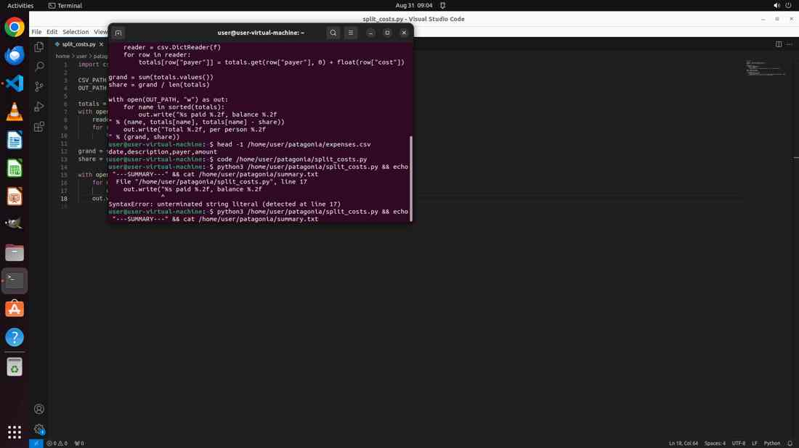
step 36 01:04:38
THINKINGThe command is typed on the prompt but not executed yet (the terminal requires an explicit Enter, as before). Let me press Enter.
ACTIONThe command is queued on the prompt. Let me press Enter to execute it.
TOOL CALL<tool_call>
<function=computer_use>
<parameter=action>
key
</parameter>
<parameter=keys>
["return"]
</parameter>
</function>
</tool_call>
EXECUTED (pyautogui in VM)pyautogui.press("return")
step 37 01:04:53
THINKINGThe script ran successfully. The summary output is:
```
---SUMMARY---
Marta Ruiz paid 656.00, balance 191.43
Nadia Okonkwo paid 319.00, balance -145.57
Tomas Feld paid 418.70, balance -45.87
Total 1393.70, per person 464.57
```
So summary.txt now exists with each traveller's total (paid) and per-person balance, plus the per-person share.
Now the final requirement: "Leave the summary open in the editor." I need to open summary.txt in VS Code. Let me open it via the terminal `code` command, or via VS Code's file explorer. Using `code /home/user/patagonia/summary.txt` from the terminal is simplest and reliable.
Let me type that command and press Enter.
ACTIONThe script now runs successfully. The summary output is:
- Marta Ruiz paid 656.00, balance 191.43
- Nadia Okonkwo paid 319.00, balance -145.57
- Tomas Feld paid 418.70, balance -45.87
- Total 1393.70, per person 464.57
The file `/home/user/patagonia/summary.txt` has been written correctly. Now I'll open it in the VS Code editor to leave it open, as requested.
TOOL CALL<tool_call>
<function=computer_use>
<parameter=action>
type
</parameter>
<parameter=text>
code /home/user/patagonia/summary.txt
</parameter>
</function>
</tool_call>
EXECUTED (pyautogui in VM)pyautogui.typewrite("code /home/user/patagonia/summary.txt")
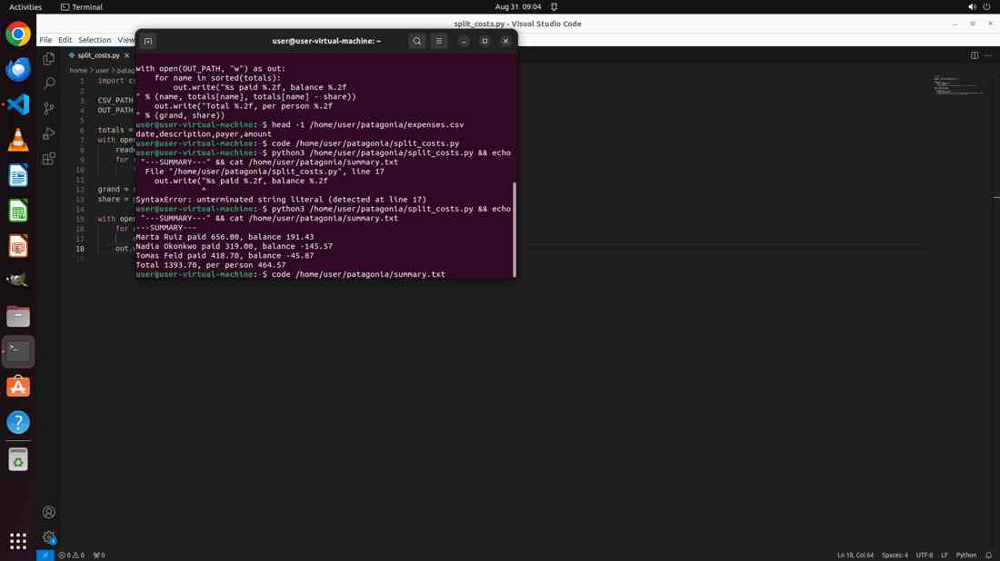
step 38 01:05:05
THINKINGThe `code /home/user/patagonia/summary.txt` command is on the prompt but not yet executed (needs Enter, as this terminal requires an explicit Enter after typing). Let me press Enter to open summary.txt in VS Code.
ACTIONThe command is queued. Let me press Enter to open summary.txt in VS Code.
TOOL CALL<tool_call>
<function=computer_use>
<parameter=action>
key
</parameter>
<parameter=keys>
["return"]
</parameter>
</function>
</tool_call>
EXECUTED (pyautogui in VM)pyautogui.press("return")
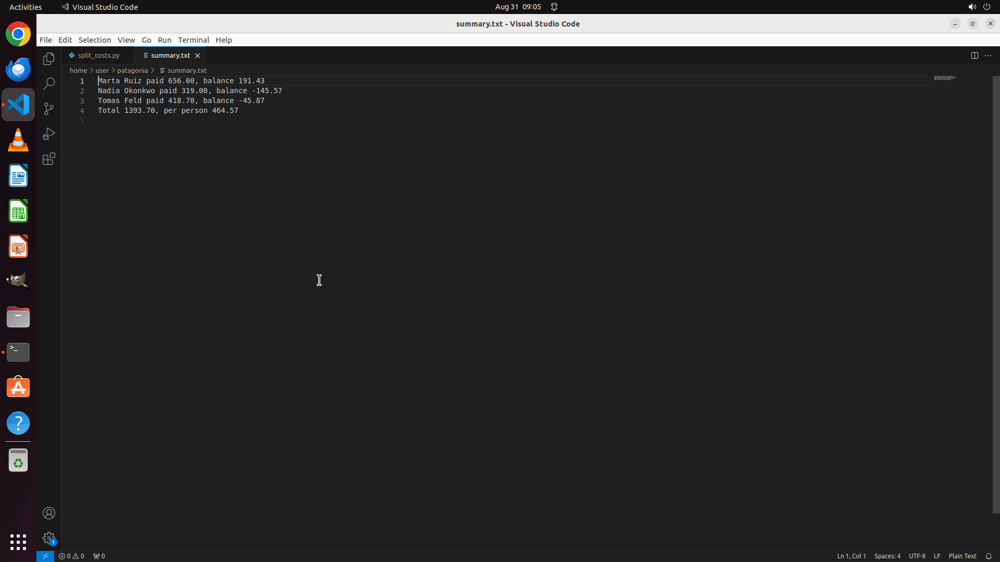
step 39 01:05:27
THINKINGsummary.txt is now open in VS Code and is the active tab, displaying:
```
Marta Ruiz paid 656.00, balance 191.43
Nadia Okonkwo paid 319.00, balance -145.57
Tomas Feld paid 418.70, balance -45.87
Total 1393.70, per person 464.57
```
All task requirements are satisfied:
1. ✅ Opened split_costs.py in VS Code
2. ✅ Fixed it so it reads expenses.csv correctly (fixed CSV_PATH, fixed field name "amount", fixed the unterminated string syntax error)
3. ✅ Ran it from a terminal, producing summary.txt with each traveller's total and the per-person balance
4. ✅ The summary is open in the editor (active tab)
The task is complete. I'll give a concise final summary and output the done marker.
ACTIONThe task is complete. Here's what I did:
**Bugs fixed in `/home/user/patagonia/split_costs.py` (edited in VS Code):**
1. `CSV_PATH` pointed to `expenses.txt` → changed to `expenses.csv`.
2. It read `row["cost"]`, but the CSV column is named `amount` → changed to `row["amount"]`.
3. The two `out.write(...)` statements had their string literals broken across two physical lines (an unterminated string / `SyntaxError` at line 17) → I retyped each as a single valid line ending with `\n`, preserving the intended per-line output.
**Ran from the terminal** (`python3 /home/user/patagonia/split_costs.py`), which successfully wrote `/home/user/patagonia/summary.txt`:
- Marta Ruiz paid 656.00, balance 191.43
- Nadia Okonkwo paid 319.00, balance -145.57
- Tomas Feld paid 418.70, balance -45.87
- Total 1393.70, per person 464.57
The summary is now open in the VS Code editor as the active tab, showing each traveller's total and the per-person balance.
EXECUTED (pyautogui in VM)DONE